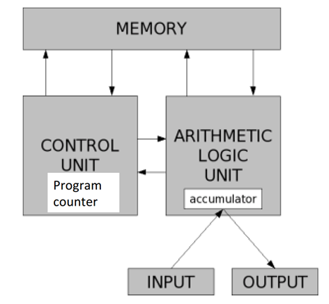

Python Workshop

Let's Enjoy Scientific Computing!
A Workshop presented by: Shayan Fahimi
Algorithms are recipes.

Turing showed that using six primitives, can compute anything.
Modern programming languages have more convenient set of primitives.


Similar Instructions to internal control unit.
Very low level programming
Compiler Languages:

Interpreter Languages:

But there are some Downsides!!!
Mainly programmed with Python:
Embedded as a scripting language:
Python has a meaningful and easy to read Syntax
>>>print("Hello World!")
>Hello World!
Everything is Object!
There are two groups of objects:
>>>type(3.0) >>>type(3) >>>type(True)
>>>type("salam")
>>>type([1, 2, 3])
You can cast types of objects:
>>>float(3)
Many operators are overloaded:
>>>print(3 * "a")
>>>print("a" + "bc")
Slicing is easier than ever:
>>>'salam'[1:3] >>>'abc'[-1] >>>'abc'[:]
>>>k = 1.0 + (3.0**2.0) + 4.0 * 12.0 >>>m = 3 % 2 + 3 / 2
>>>k = (2 == 5) >>>m = (3 >= 7)
>>>k = True and not False >>>m = False or True
The operators in and not in test for collection membership
The indentation denotes a block of instructions, this indentation provides a visual structure that reflects the semantic structure of the program.
#My comments will be here!
if x%2 == 0:
if x%3 == 0:
print('Divisible by 2 and 3')
else:
print('Divisible by 2 and not by 3')
elif x%3 == 0:
print('Divisible by 3 and not by 2')
We can repeat a sequence of steps multiple times based on some decision.
Leads to new classes of algorithms
x = 3 ans = 0 itersLeft = x while (itersLeft != 0): ans = ans + x itersLeft = itersLeft – 1 print(str(x) + '*' + str(x) + ' = ' + str(ans))
A For loop is defined as follows:
for < identifier > in < sequence >: < code block >
A sequence of Intergers for iteration can be generated by:
range(n) = [0, 1, 2, 3, …, n-1] range(m,n) = [m, m+1, …, n-1] xrange(n)
Functions give us abstraction
def < function name > (< formal parameters >): < function body >
A simple example:
def max(x, y): if x > y: return x else: return y
It can be invoked by:
>>>z = max(3, 4)
All Functions and script can be considered as modules.
They can be imported separately or as a group.
pi = 3.14159 def area(radius): return pi*(radius**2) def circumference(radius): return 2*pi*radius
Assume we save it as circle.py, then it can be imported by:
import cicle as crl #OR from circle import area #OR from circle import *
Reduce a problem to a simpler version of the same problem: Recursive Step
Keep Reducing until reach a simple case that can be solved directly: Base Step.
def recurMul(a, b): if b == 1: return a else: return a + recurMul(a, b-1)
Global Variables:
>>>global numCalls
Use with care!!!
What if we hit an unexpected condition?
What to do?
try:
f = open(‘grades.txt’)
# … code to read and process grades
except:
raise Exception('Can’t open grades file')
The most General Form:
def divide(x, y): try: result = x / y except ZeroDivisionError, e: print "division by zero! " + str(e) else: print "result is", result finally: print "executing finally clause"
One of the powerful characteristics of Python is its huge Data Types
Ordered Sequence of Elements
Elements can be (I think) anything:
t1 = (1, ‘two’, 3) t2 = (t1, ‘four’)
Operations:
print(t1+t2) print((t1+t2)[3]) print((t1+t2)[2:5]) t3 = (‘five’,)
The Empty Tuple can be defined by:
divisors = ()
You can iterate over Tuples.
Tuples can not be changed after creation.
They are particularly good for keeping a set of known and fixed number of other data object, such as space coordinates.
A lot like Tuples.
BUT
Lists are Mutable!
M = ['Ali', 'Shahab']
F = ['Marzie', 'Niloofar']
Name = [M, F]
Name1 = [['Ali', 'Shahab'],
['Marzie', 'Niloofar']]
M.append('MohammadReza')
print(Name)
Name=[['Ali', 'Shahab', 'MohammadReza'],
['Marzie', 'Niloofar']]
print(Name1)
Name1=[['Ali', 'Shahab'], ['Marzie', 'Niloofar']]
Elements in Name are not copies of the lists, they are the lists themselves.
We can also change elements directly:
M[3]='Shayan'
Lists are iteratable like Tuples and Strings.
Many operations can be performed on Lists:
Name = M.append(F) [['Ali', 'Shahab'], ['Marzie', 'Niloofar']]
Name = M + F ['Ali', 'Shahab', 'Marzie', 'Niloofar']
Name1 = Name[:]
Avoid Mutating a list over which one is iterating.
It will result in errors or infinity loops.
WHY?
Inside for loops, Python keeps track of where it is in list using internal counter. Mutating changes the length, but do not update the counter.
Dict is generalization of lists.
Here, indices are refered to as Keys, having arbitrary form.
A Dict is a collection of < key, values >.
monthNumbers = { ‘Jan’:1, ‘Feb’:2, ‘Mar’:3,
1:’Jan’, 2:’Feb’, 3:’Mar’}
We can access Values by using Keys.
monthNumbers[‘Jan’] monthNumbers[1]
monthNumbers[‘Apr’] = 4 collect = [] for e in monthNumbers: collect.append(e) [1, 2, 'Mar', 'Feb', 'Apr', 'Jan', 3] monthNumbers.keys() [1, 2, 'Mar', 'Feb', 'Apr', 'Jan', 3]
Keys can be another complex object such as Tuples. Keys must be immutable.
Sets are unordered lists with no duplicate entry.
They can be used to calculate differences and intersections.
a = set(["Jake", "John", "Eric"]) b = set(["John", "Jill"]) a.intersection(b) set(['John']) a.difference(b) set(['Jake', 'Eric']) a.union(b) set(['Jill', 'Jake', 'John', 'Eric'])
Functions are also Objects:
It will result in Higher order Programming.
def applyToEach(L, f): for i in range(len(L)): L[i] = f(L[i]) L = [1, -2, 3.4] applyToEach(L, abs) applyToEach(L, int) applyToEach(L, fact)
Python provides a general purpose HOP called map
map(abs, [1, -2, 3, -4]) [1, 2, 3, 4]
Python supports the creation of anonymous functions
def f(x): return x*2 g = lambda x: x*2
Python supports many different kinds of data.
Objects have:
In OOP, Everything is an object and has a type. It will help in data obstraction.
In Python, the class statement is used to define a new type.
class Coordinate(object): … define attributes here
Classes can inherit attributes from other classes
__init__ method provides a way to add some initial values:
class Coordinate(object): def __init__(self, x, y): self.x = x self.y = y
self is the name of the passed object by the Python.
The “.” operator is used to access an attribute of an object
#creating an instance origin = Coordinate(0,0)
Left to its own devices, Python uses a unique but uninformative print presentation for an object
>>> print c <__main__.Coordinate object at 0x7fa918510488>
__str__ method for a class will be called when it needs a string to print.
class Coordinate(object): def __init__(self, x, y): self.x = x self.y = y def __str__(self): return “<”+self.x+”,”+self.y+”>” >>> print c <3,4>
Use methods for getting and setting values in types. Otherwise, there will be bugs.
class Coordinate(object): def __init__(self, x, y): self.x = x self.y = y def __str__(self): return “<”+self.x+”,”+self.y+”>” def get(self): return (self.x, self.y) def set(self, e): self.x = e[0] self.y = e[1]
Python has plenty of Open-source libraries:
pylab must be imported before use.
Plots can be created by pylab.plot
pylab.figure(Temperature)
pylab.title('Monthly Temperature of City)
pylab.xlabel('Months')
pylab.ylabel('Temperature (C)')
pylab.legend(loc = 'best')
pylab.plot(M, T)
pylab.show()
Also, pylab.hist() will make histograms!
random.py will generate suedo-random numbers!
NumPy is the fundamental package for scientific computing with Python. It contains:
import numpy as np x = np.array([[1, 2, 3], [4, 5, 6]])
a = np.matrix('1 2; 3 4')
np.matrix([[1, 2], [3, 4]])
numpy.linalg: is a comprehensive set of Python methods for algebrical operations.
a = np.matrix('1 2; 3 4')
np.matrix([[1, 2], [3, 4]])
At the moment, the current combination of Python, NumPy, SciPy, Matplotlib, and IPython provide a compelling environment for numerical analysis and computation.
Pylab will bring all of these environments in one place.
For example, polyfit which is a function in pylab will fit a polynominal of degree n to the correspondant values.
pylab.polyfit(xvals, yvals, degree)